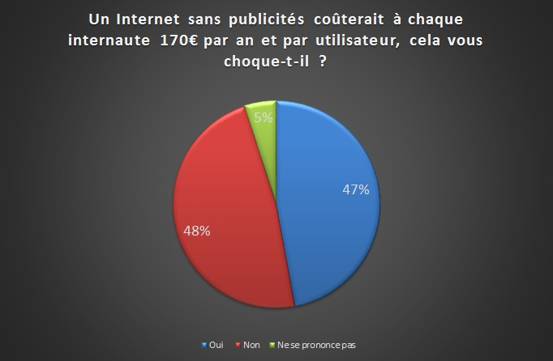

Législation des publicités ciblées sur Internet
Sur Internet, nombre de sites (si ce n'est tous) désormais usent de publicités généralement ciblées afin de rémunérer leurs sites. D'ailleurs, d'après une étude réalisée au Royaume-Uni, un Internet sans pub coûterait 170€ par an et par utilisateur.
Et c'est sur cette problématique que nous avons voulu nous intéresser. Par le biais de ce site, nous exposerons la cartographie de la controverse qui en est induite ainsi que les différents acteurs. Enfin nous présenterons les enjeux économiques, politiques et éthiques qui en résultent.
D'après l'IAB , "la loi sur l'économie numérique du 21 juin 2004 édicte que toute publicité sur Internet doit pouvoir être clairement identifiée comme telle". Ainsi, nous pouvons catégoriser plusieurs types de publicités :
Nous sommes en droit de se demander le type de publicités que nous recevons lorsque nous allons sur un site. Cela devient simple, en effet par le biais de notre adresse électronique, du formulaire d'inscription (utile pour s'inscrire sur un site), de l'historique de recherches ou encore de l'adresse IP, la publicité devient ciblée pour n'importe quelle recherche effectuée. .
Parmi elles, nous pouvons distinguer trois types de publicités ciblées :
Ce qui compte pour un annonceur, c'est d'être visible par des personnes susceptibles d'être intéressées par ses offres. À ce stade, il n'a pas besoin de leur nom, mais de leur intérêt.
Qu'advient-il des données personnelles que nous laissons sur un site ?
Soit elles ne sont destinées qu'au site consulté, car l'annonceur les a recueillies avec des dispositifs qu'il opère lui-même. Soit elles ont été recueillies par la régie publicitaire qui insère des publicités sur ce site, mais qui est une société distincte de l'éditeur du site. Soit elles ont été déduites des recherches de l'internaute sur un moteur de recherche.
Ainsi en 2009, la géante entreprise Google avait émis l'idée de mettre en place un ciblage de publicités plus pertinent et en conséquence les rendre plus utiles. Ceci se concrétisa par 67% de chiffres d'affaires en plus rien qu'avec la publicité ciblée pour Google et Youtube.
Notamment dans son service Gmail : « Vous pouvez voir des annonces textuelles ou illustrées dans Gmail lorsque vous lisez vos messages. Les annonces que vous voyez peuvent être basées sur les mêmes critères que celles qui sont diffusées sur les pages de recherche Google, ainsi que sur d'autres critères, tels que les messages contenus dans votre messagerie » En clair, Google scrute les messages que nous envoyons afin d'en proposer les meilleures publicités pour nous.
Néanmoins, un nouveau type de site fait son apparition : https://www.screenwisetrends.com/
Celui-ci a principe très simple mais néanmoins risqué : après installation d'un plug-in sur votre ordinateur, Google pourra récupérer vos données en échange de bons d'achat ou autre.
Résultat :
Comment s'affichent les publicité ciblées sur les sites que nous rencontrons ?
Les publicités s'affichent grâce à un partage de l'espace visuel commandé par les régies publicitaires. En faisant appel notamment à la technologie hypertexte du protocole HTML à travers :
Ce qui fait acte de loi, sont les textes et tout d'abord la loi Sapin de 1993 qui régit l'achat d'encarts publicitaires pour les annonceurs.
Parmi ces dispositions, nous avons :
Or «Certains de ces acteurs ont pris quelques libertés avec l'application de la loi Sapin, explique Pierre-Jean Bozo, président de l'UDA (Union des Annonceurs).
Un marché de la publicité sur Internet qui explose, et une loi Sapin qui n'est pas appliquée rigoureusement et qui n'est pas armée pour les publicités sur internet. Risque de concurrence déloyale entre les petits et gros annonceurs.
Afin de compléter cette loi, l'article L121-15-1 du code de la consommation stipule que "les publicités, et notamment les offres promotionnelles, telles que les rabais, les primes ou les cadeaux, ainsi que les concours ou les jeux promotionnels, adressés par courrier électronique, doivent pouvoir être identifiés de manière claire et non équivoque dès leur réception par leur destinataire, ou en cas d'impossibilité technique, dans le corps du message. Ces messages doivent indiquer une adresse ou un moyen électronique permettant effectivement au destinataire de transmettre une demande visant à obtenir que ces publicités cessent."
En 2010, grâce au forum des droits sur Internet, le gouvernement a mis en place une charte nommée "Charte sur la publicité ciblée et la protection des internautes" qui donne lieu à la création par les régies publicitaires d'une plate-forme qui permet aux internautes de recevoir ou non des publicités ciblées. D'autre part, une durée de vie des cookies a été mise en place. Ainsi, les cookies au préalable d'une durée infinie, ne dure que 60 jours.
Le G29 (qui regroupe les CNIL (Commission Nationale de l'Informatique et des Libertés européennes) a édicté un certain nombre de bonnes pratiques à destination notamment des éditeurs de réseaux sociaux. Les CNIL européennes leur demandent de :
Enfin, chaque site utilisant le système de traçage par cookies doit prévenir ses utilisateurs par une bannière ou un message notant l'utilisation de cookies.
De nombreuses associations mais aussi la CNIL conseillent aux utilisateurs ne voulant pas laisser de données personnelles :
Le ministère de l'Economie, de l’Industrie et du Numérique prépare et met en œuvre la politique du Gouvernement en matière économique ainsi qu'en matière d'industrie, de services, de petites et moyennes entreprises, d'artisanat, de commerce, de postes et communications électroniques, de suivi et de soutien des activités touristiques, d'économie numérique et d'innovation.


Un internaute est un utilisateur du réseau Internet. C'est la personne à qui s'adresse les publicités ciblées lorsqu'il navigue sur le web.
Une entreprise publicitaire est une une société spécialisée dans le domaine de la publicité. Elle permet d'accompagner l'annonceur dans sa campagne publicitaire, de le conseiller et de l' aider à concevoir le dispositif publicitaire adapté à son enseigne.


Un fournisseur de services d'applications ou fournisseur d'applications en ligne est une entreprise qui fournit des logiciels ou des services informatiques à ses clients au travers d'un réseau (Internet en général).
Il s'agit d'entreprises influentes dans le monde du numérique ( GAFA : Google, Amazon, Facebook, Apple). Ce sont sur leurs sites et dérivés que les internautes vont pouvoir visualiser des publicités.


Le ciblage comportemental est une technique de ciblage qui consiste à personnaliser les contenus comme les publicités, en fonction du comportement des internautes et de l'identification de leurs centres d'intérêt.
Une régie publicitaire est une entreprise mettant en relation des annonceurs souhaitant diffuser des publicités et des entreprises de média qui souhaitent mettre à disposition des espaces publicitaires, valorisant ainsi leur audience. C'est un intermédiaire représentant les entreprises vendant des espaces publicitaires.


Le ciblage comportemental est une technique de ciblage qui consiste à personnaliser les contenus comme les publicités, en fonction du comportement des internautes et de l'identification de leurs centres d'intérêt.
Ce n'est pas le site en lui-même mais les endroits de la page web où on va être disposés les publicités.


Dans le monde de la communication et des médias, un annonceur est une entreprise qui investit en vue de se faire connaître. L'annonceur est un professionnel qui est responsable d'une marque ou d'un produit. Il se charge d'établir une campagne publicitaire en la commanditant, en choisissant une agence de publicité et en confiant à un chef de produit le soin de suivre l'évolution de cette campagne.
L'Union des annonceurs (UDA) est une association réunissant et offrant des services aux annonceurs et autres acteurs de la communication.


L'Agence nationale de la sécurité des systèmes d'information (ANSSI) est un service français dont le but est d'assurer la mission d'autorité nationale en matière de sécurité des systèmes d'information.Elle est chargée de proposer les règles à appliquer pour la protection des systèmes d’information de l'État et de vérifier l'application des mesures adoptées.
Il s'agit d'une association politico-économique regroupant vingt-huit Etats européens. Elle possède des représentants au G29.


L’Interactive Advertising Bureau (ou IAB) est une organisation regroupant les acteurs de la publicité sur Internet et dont le but est de développer des normes, mener des recherches, et fournir un soutien juridique aux acteurs de l'industrie qu'elle représente.

Le G29 (Groupe de travail Article 29 sur la protection des données) est un organe consultatif indépendant sur la protection des données et de la vie privée.
La Commission nationale de l'informatique et des libertés (CNIL) est une autorité administrative indépendante française. La CNIL est chargée de veiller à ce que l’informatique soit au service du citoyen et qu’elle ne porte atteinte ni à l’identité humaine, ni aux droits de l’homme, ni à la vie privée, ni aux libertés individuelles ou publiques.


Il s'agit d'une organisation à but non lucratif qui est aussi une association autorégulatrice se dédiant à la collection des données sur Internet et dont l'utilité se destine pour la publicité numérique.
Un bloqueur de publicités est un logiciel qui permet de supprimer les publicités en ligne lors de l'affichage de pages webs dans un navigateur web.


La liste noire est un document regroupant une liste des sites jugés indésirables.
En informatique, un logiciel est un ensemble de séquences d’instructions interprétables par une machine et d’un jeu de données nécessaires à ces opérations. Ces logiciels permettent d'effacer les cookies afin d'empêcher de transmettre ces cookies à des tiers.


"Constitue une donnée à caractère personnel toute information relative à une personne physique identifiée ou qui peut être identifiée, directement ou indirectement" : Art. 2 de la loi "Informatique et libertés"
Le cookie est l'équivalent d'un petit fichier texte stocké sur le terminal de l'internaute. Ils permettent aux développeurs de sites internet de conserver des données utilisateur afin de faciliter leur navigation et de permettre certaines fonctionnalités.Ils contiennent des informations personnelles résiduelles pouvant potentiellement être exploitées par des tiers.


Une adresse IP ( Internet Protocol) est un numéro d'identification qui est attribué de façon permanente ou provisoire à chaque appareil connecté à un réseau informatique utilisant l'Internet Protocol. L'adresse IP est à la base du système d'acheminement (le routage) des messages sur Internet.
Il s'agit de formulaires à remplir et qui contiennent des informations personnelles de l'internaute qui sont nécessaires pour s'inscrire sur un site.




Rédacteur en Chef

Expert Documentaliste
Webmaster

Quantificatrice
Coordinatrice
Webmaster

Quantificateur
ISEN, 20 rue Cuirassé de Bretagne, 29200 BREST
acebook ISEN Brest


{kind=link}